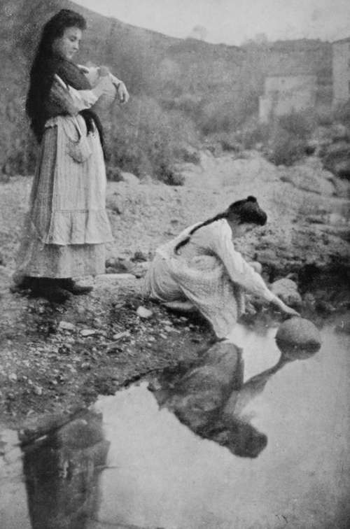

Birds'-Nesting In Spain. Part 2
Description
This section is from the book "Bird-Hunting Through Wild Europe", by R. B. Lodge. Also available from Amazon: Bird-Hunting Through Wild Europe.
Birds'-Nesting In Spain. Part 2
We had intended remaining within sight of the arrangement in some crevice of the rock, but the broiling sun found out in turn each hiding-place we chose, and fairly scorched us out, the heat being to me quite unbearable. Accordingly we sought shelter in one of the small, whitewashed cottages at no great distance, from which the spot could be watched through our glasses. Needless to say, we did not seek hospitality in vain, but were welcomed with true Spanish courtesy by the whole family. The master of the house was out working in his fields, but arrived about an hour later, and we were soon on the most friendly footing, and satisfying to the best of our abilities their questions about the outside world. In their eyes-for I think not one of them had ever been ten miles from the spot-we were wonderful travellers ; our friend Fernando Flores declaring that we must have spent our whole lives corriendo por todo el mundo, running over the whole world. And as M- had visited India, China, Japan, Vancouver, the States, etc, and I had seen South America, Newfoundland, the West Indies, the Mediterranean, and several European countries, our collective travels certainly did cover a good part of the world's surface.
As we had brought provisions for the day we had no need to share their midday meal, to which we were invited : a central dish of stew, from which the family at the circular table helped themselves with wooden spoons, the meal being washed down by deep draughts of water from the porous, chatty-like jars kept in the coolest corner. Delightfully cool and refreshing this water was, though I much fear that it came from the sewage-tainted stream which flowed past their door, for before leaving I photographed the two pretty daughters filling their cantaros from its polluted depths.
Filling their Cantaros
I must say that the sight gave me sundry misgivings, for I had refreshed myself more than once while waiting ; however, no ill results followed, and perhaps after all the drinking-water had come from some purer source, for in Spain they well know and appreciate the value of good and pure water.
We had not forgotten the Vultures, but from time to time kept a look-out from the doorway. We started with fair hopes of success, for while setting the bait out and arranging the camera we had noticed a soaring Griffon which had evidently espied the bait. Sure enough before long, four, and presently ten, of these great scavengers of Nature were wheeling over the spot. But for some reason or other they gradually soared higher and higher until they were mere specks in the blue sky, and finally disappeared altogether. Then four or five of the smaller Egyptian Vultures took their place, but though these came much nearer, some of them even settling on the hillside not far away, they did not actually touch the bait, and at the approach of sunset we had to take up the camera.
I think that if we had procured a bigger bait, say a goat or a lamb, we should have had a better chance of success. They told me that if we could wait for five or six weeks for the next bull-fight we should be certain of success, for the carcases of the unfortunate horses would be thrown over the cliff near where we were, and the Griffons would assemble from far and wide for the feast. This, however, we could not do, for we had made arrangements to visit Malaga and the surrounding country before going to the marismas.
But before taking this journey we were tempted by the waiter at our hotel to make a day's expedition to a small place along the line at no very great distance, where he declared we could see Vultures on their nests close to the railway station.
As Prince Rudolf in his book describes just such a nesting colony of Griffons somewhere in this region, but without mentioning the name of the place, we went off in full expectation of seeing them at least, even if it should be impracticable to do anything more. But our waiter had either made a mistake in naming the station, or he had imagined the whole thing, for on alighting we found ourselves in the midst of a plain, with no possible nesting-place of Vultures within two or three miles.
As there was no return train for many hours we made the best of the situation by wandering along a small, muddy river, in which were lying immersed hosts of reddish-coloured swine, and inquiring of all and sundry whom we met if they knew of any Eagles' nests.
The sight of two hot and perspiring Englishmen loaded with heavy bags and odd-looking impedimenta, staggering along over the fields under a broiling sun, and making such inquiries, would in most countries cause surprise, and questions as to our sanity. However, nothing can surprise a Spaniard or upset his grave courtesy. One and all of these swarthy labourers toiling on the fields, burnt by the torrid sun into the semblance of negroes, gave us polite attention ; and presently one of them said that he knew of none himself, but would go with us and find some one who did.
Forthwith he left his hoe sticking up in the ground and followed us, or, to be more precise, preceded us. After perhaps an hour's walk he found a goatherd, who sent his boy, while he himself looked after his flocks, along with our new-found friend to show us the way. Sure enough, on proceeding farther he took us to the entrance of a forbidding-looking gorge, where on one side the perfectly perpendicular rock rose to the height of quite 600 or 800 feet. Then, pointing with his staff, we beheld the desired nido del aquila two-thirds of the way up, where the crag overhung. The owner of the nest, a fine Bonelli's Eagle, then flew off, giving us a good view as she crossed the gorge and disappeared.
It was in a perfectly hopeless situation ; for even if we had come provided with a rope long enough, the cliff overhung at this particular spot so far that it would have been impossible for any human being to reach the nest, and we could only gaze at it with interest. It probably contained young, Eagles being very early breeders. All my attempts to photograph the nest, either from the bottom or by climbing up the opposite side as far as possible and using the telephoto lens, were of no avail. Such a strong wind came rushing through the gorge that it was impossible to keep the camera steady.
Continue to: